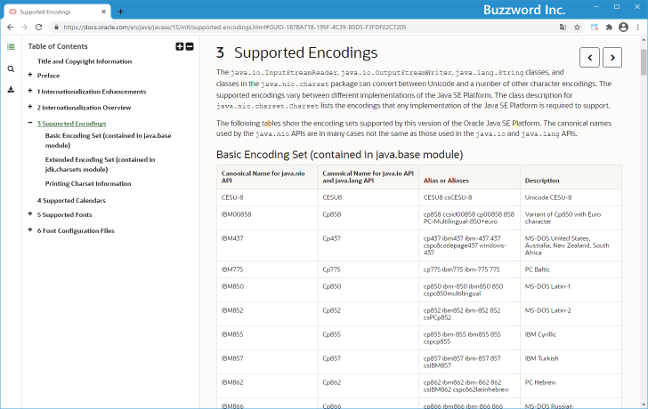

ソースファイルのエンコーディングを指定してコンパイルする
デフォルトエンコーディング以外のエンコーディングを使ってソースファイルを保存した場合、コンパイルを行う時にエンコーディングを指定する必要があります。ここではソースファイルのエンコーディングを指定してコンパイルを行う方法について解説します。
コンパイル時にエンコーディングを指定する
Java では環境ごとにデフォルトのエンコーディング file.encoding プロパティに設定されており、異なるエンコーディングを使用してソースファイルを保存した場合にはコンパイルを行う時にエンコーディングを指定する必要があります。
コンパイルを行う時にエンコーディングを指定するには javac の -encoding オプションを使います。
javac -encoding エンコーディング名 ソースファイル名.java
エンコーディング名にはソースファイルを保存した時のエンコーディングをを指定してください。
または次のようにエンコーディングを指定することもできます。
javac -J-Dfile.encoding=エンコーディング名 ソースファイル名.java
現在使用している JDK のバージョンで、指定できるエンコーディングの一覧は「Supported Encodings」で参照することができます。

先ほどのサイトに掲載されているエンコーディングの中から日本でよく利用されるエンコーディングをいくつか紹介します。
| java.nio API用 | java.io/java.lang API用 | 説明 |
|---|---|---|
| US-ASCII | ASCII | American Standard Code for Information Interchange |
| UTF-8 | UTF8 | Eight-bit Unicode (or UCS) Transformation Format |
| EUC-JP | EUC_JP | JISX 0201, 0208 and 0212, EUC encoding Japanese |
| Shift_JIS | SJIS | Shift-JIS, Japanese |
| windows-31j | MS932 | Windows Japanese |
同じエンコーディングであっても java.nio API 用とjava.io/java.lang API 用で別々の記述がされていますが、どちらでも使用できるようです。
ソースファイルを保存する時のエンコーディングとして UTF-8 を使用した場合には次のいずれかの方法でエンコーディングを設定してコンパイルを行います。
javac -encoding UTF-8 ソースファイル名.java javac -J-Dfile.encoding=UTF-8 ソースファイル名.java
それでは実際に試してみます。テキストエディタで次のプログラムを記述し、 JSample2_1.java として保存してください。この時、エンコーディングとして UTF-8 を選択してください。
class JSample2_1{
public static void main(String[] args){
System.out.println("こんにちは");
}
}
コマンドプロンプトから作成したソースファイルをコンパイルを行います。最初はエンコーディングを指定せずにコンパイルを行ってください。その後でプログラムを実行してください。
javac JSample2_1.java
コンパイルは行えましたが、プログラムを実行すると画面には文字化けしたような文字列が出力が行われました。
次に同じソースファイルのエンコーディングとして UTF-8 を指定してコンパイルを行います。その後でプログラムを実行してください。
javac -encoding UTF-8 JSample2_1.java
今度は文字化けされずに画面に文字列が出力されました。
もうひとつ別の方法でソースファイルのエンコーディングとして UTF-8 を指定してコンパイルを行います。その後でプログラムを実行してください。
javac -J-Dfile.encoding=UTF-8 JSample2_1.java
この場合も文字化けされずに画面に文字列が出力されました。
このように自分の環境のデフォルトエンコーディングとは別のエンコーディングを使ってソースファイルを保存した場合でも、コンパイルの時にソースファイルで使用するエンコーディングを指定することで正常にファイルを読み込むことができます。
-- --
ソースファイルのエンコーディングを指定してコンパイルを行う方法について解説しました。
( Written by Tatsuo Ikura )

著者 / TATSUO IKURA
初心者～中級者の方を対象としたプログラミング方法や開発環境の構築の解説を行うサイトの運営を行っています。